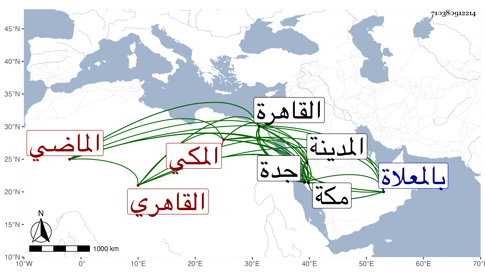

0902Sakhawi.DawLamic.ITO20230111-ara1.EIS1600.710380912214
Biography ID: 710380912214
546
عبد العزيز بن أحمد بن محمد بن أحمد العز بن الشهاب القاهري ثم المكي الماضي أبوه ويعرف بابن المراحلي . ولد سنة أربع وعشرين وثمانمائة بالقاهرة ونشأ بها فحفظ القرآن وتلاه في بعض مجاوراته بالمدينة على الشهاب الأبشيطي وكذا تلاه على غيره وترقي للتجارة وتميز فيها ، وقطن مكة زمنا وزاحم الكبار بحيث تزوج ابنة الخواجا بير محمد واستولدها وغيرها عدة أولاد ما سعد فيهم ، وتكرر قدومه القاهرة واختص بالعلاء بن خاص بك واعتمده ابنا عليبة والرئيس يحيى وغيرهم في الغيبة والحضور وملك دورا بمكة وغيرها بل وجدد بالسروجيين من القاهرة مكتبا للايتام وسبيلا ، وعرف بالحزم والضبط لشأنه وعدم التبسط في معيشته مع المحافظة على التلاوة والجماعات والطواف ومشاهد الخير وبذل الزكاة للمستحقين ونحوهم والميل للصالحين كالكمال إمام الكاملية والاكثار من ذكر كرامتهم وأحوالهم والتودد لهم ، ولم يزل على طريقته حتى مات بعد زوجته بيسير في جمادى الآخرة سنة تسع وثمانين بمكة ودفن بالمعلاة وكان قد كتب بحمله مع نائب جدة إلى القاهرة بسبب تركه زوجته فيما قيل وغيرها فما أمكن لكونه كان في ضعف موته ، وتفرقت تركته لاختلاف بنيه وغيره رحمه الله وعفا عنه .
